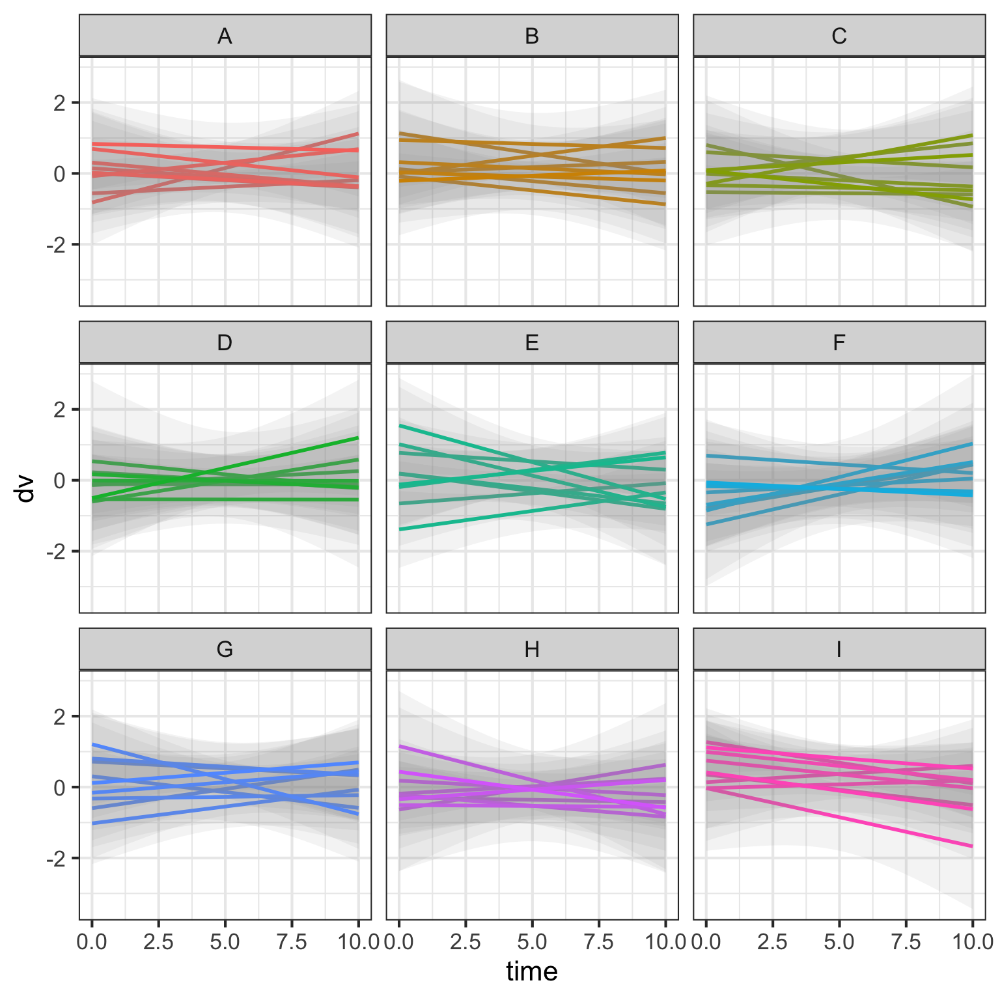
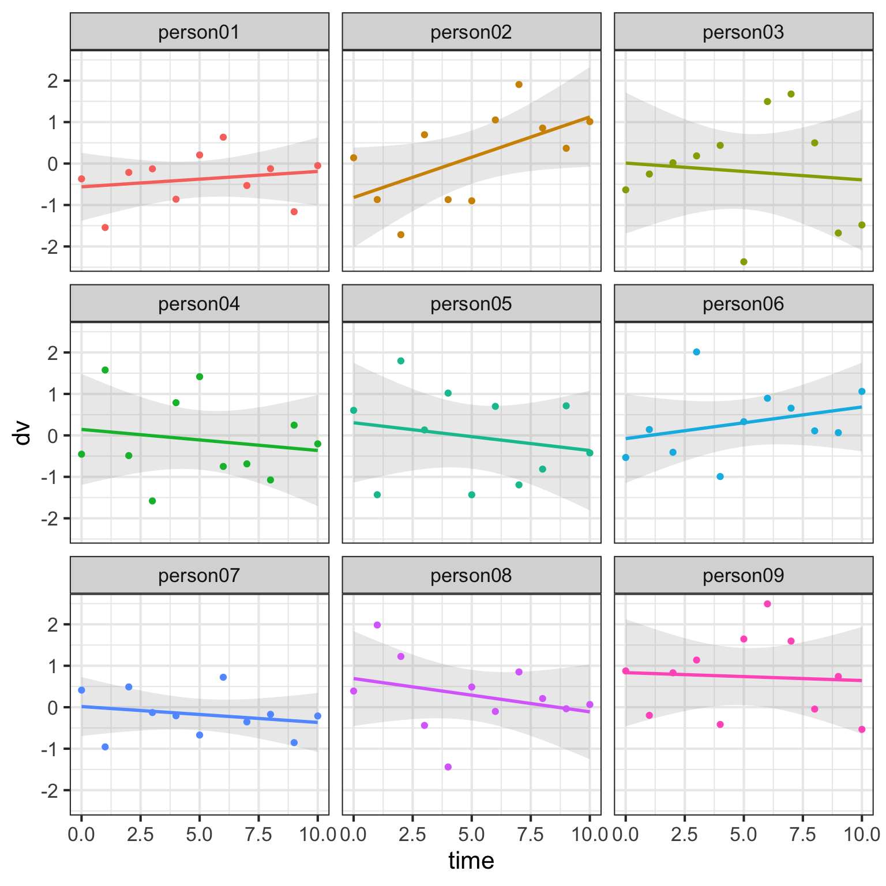
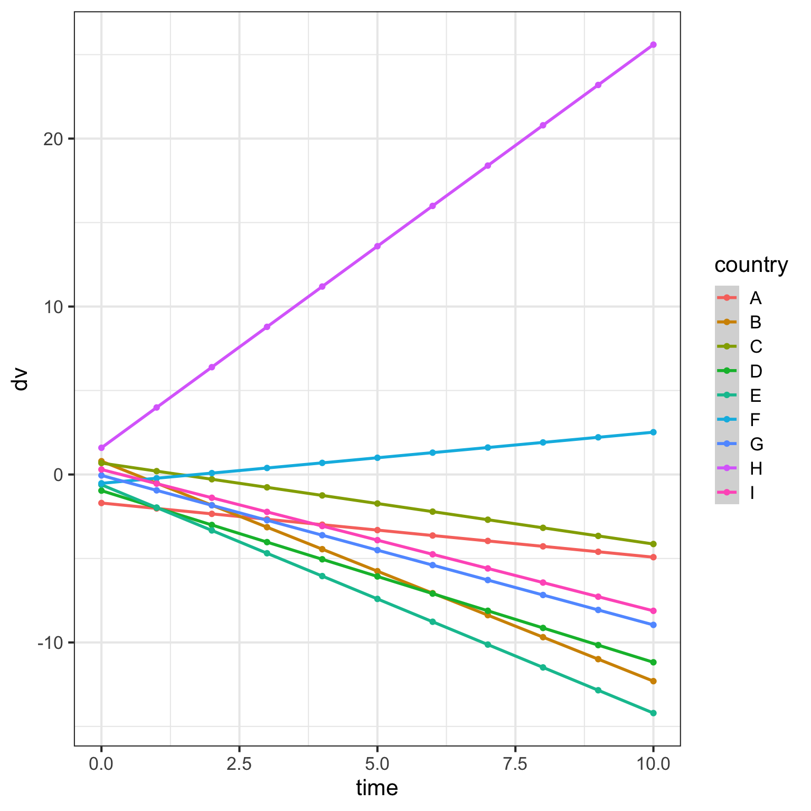
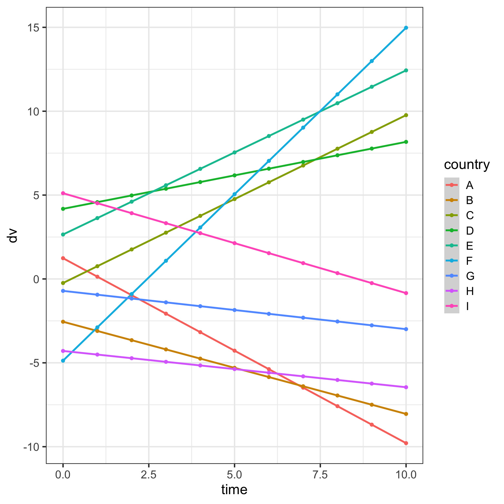
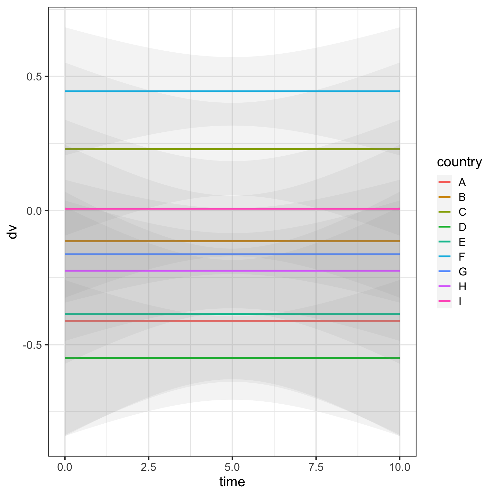
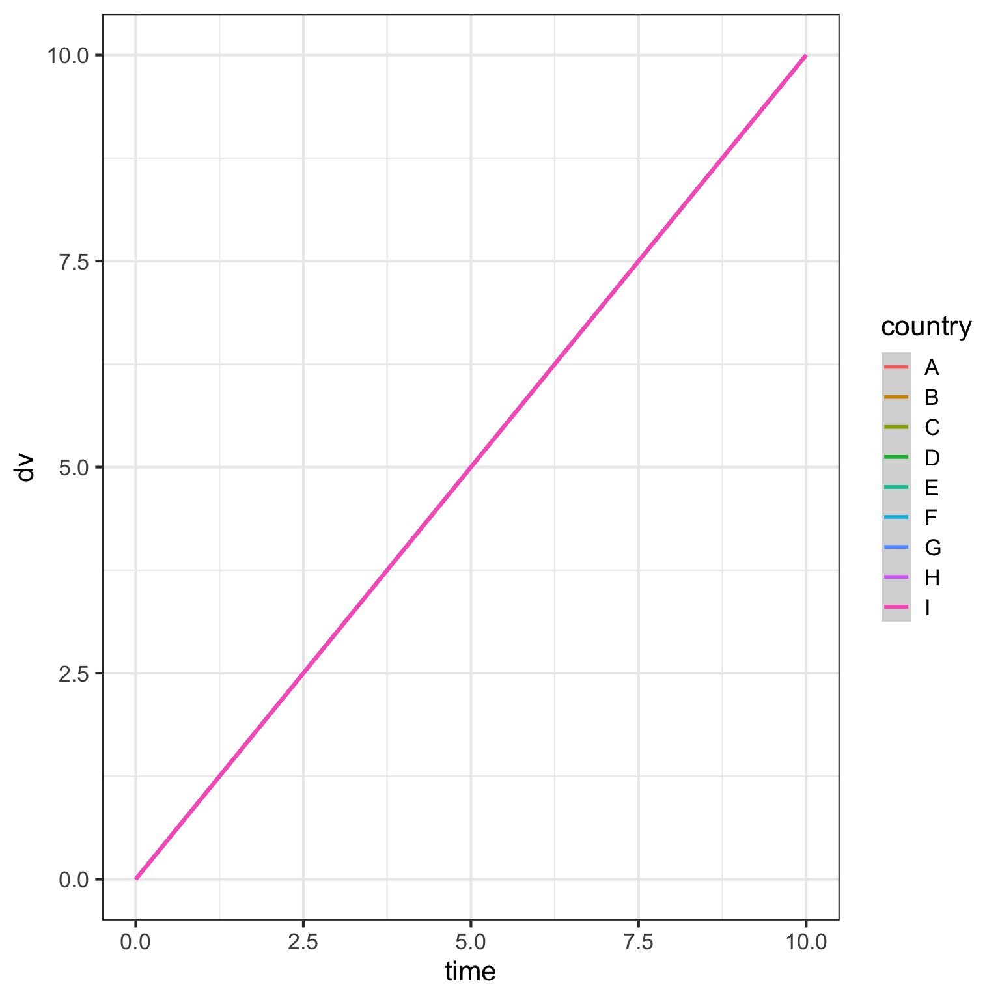
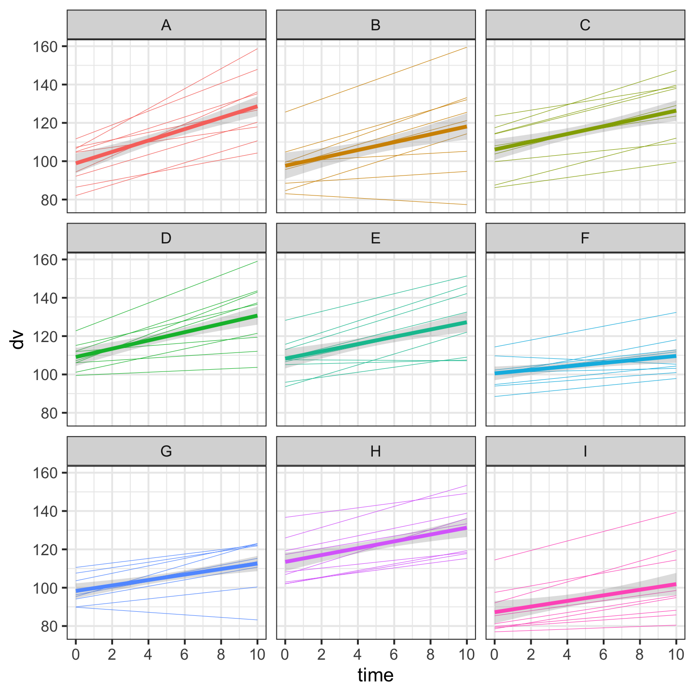

5 Slope
I’m going back to data simulation. Someone asked me recently how to add a continuous predictor to a mixed effects model. I’m going to build a function for simulating data with a nested structure sampling people within countries and a continuous predictor of time (0-10). I’ll plot the data with various values for the parameters, including random intercepts and slopes. If you need a refresher on mixed effects models, see this tutorial by Dale Barr and me.
5.1 Data Simulation Function
First, I need to write a function to generate the simulated data. I want to be able to vary the fixed and random effects parameters, but am setting almost everything to 0 as a default. I’m using mixed design simulation functions from the faux package, which you can learn more about in this vignette.
Data simulation function
sim <- function(
n_countries = 10, # number of countries samples
n_people = 10, # number of people sampled per country
c_int_sd = 0, # SD of random intercept for countries
c_time_sd = 0, # SD of random slope for time (by country)
c_cors = 0, # correlation between c_int and c_time
p_int_sd = 0, # SD of random intercept for people
p_time_sd = 0, # SD of random slope for time (by person)
p_cors = 0, # correlations among p_int, p_time, p_height
err_sd = 0, # error SD
intercept = 0, # grand intercept
b_time = 0 # fixed effect of time
){
add_random(country = LETTERS[1:n_countries]) %>%
add_random(person = n_people,
.nested_in = "country") %>%
add_ranef(.by = "country",
c_int = c_int_sd,
c_time = c_time_sd,
.cors = c_cors) %>%
add_ranef(.by = "person",
p_int = p_int_sd,
p_time = p_time_sd,
.cors = p_cors) %>%
crossing(time = 0:10) %>%
add_ranef(err = err_sd) %>%
mutate(dv = intercept + c_int + p_int +
(b_time + p_time + c_time) * time +
err)
}5.2 Default
The default plot is pretty boring. Everyone’s score is is equal to the grand intercept.
5.3 Random error
We can make the simulation more realistic by adding random error.
Code

Here are the data for each person in country A.
Code

We’re going to leave the error SD as a totally unrealistic 0 for the next few plots to make it easier to see what happens to the data when you’re changing random effects parameters.
5.4 Random intercepts for country
Now let’s add a random intercept per country. Setting c_int_sd to 1 means that the intercepts for each country are simulated to vary with an SD of 1.
5.5 Random slopes for country
What does it look like if we leave the random intercepts at 0 and set the random slope of time for countries to 1?
5.6 Random intercepts and slopes for country
What if we set both the random intercept and slope of time for country to 1? Now, the intercepts vary around 0 and the slopes of the lines also vary.
Code

Random intercepts and slopes can be correlated. For example, the time effect might be larger in countries where people tend to have lower scores, leading the random slope and intercept for country to be negatively correlated.
I increased the SD of the random intercept to make it easier to see that countries with a higher intercept tend to have more negative slopes than those with a lower intercept.
Code

And here’s the same plot with a positive correlation. Now the countries with a higher intercept tend to have a more positive effect of time.
5.7 Random intercepts for person
If we vary the random intercepts by person, this increases the variability within each country. Note that because we’re only sampling 10 people in each country, this means the intercept for each country will vary a bit depending on the mean of the 10 people from that country.
Code

Let’s look at the data for each country separately.
5.8 Random slopes for person
Vary the random slopes by person. Here, we’re viewing the data for each country separately. The thick lines are the average slope for the country.
5.9 Fixed effect of time
Let’s add a fixed effect of time.
Code

That’s pretty boring, so lets also add random time slopes for both country and person. Make the fixed effect of time bigger to emphasise how the average slopes by country tend to be positive, even though there is a lot of variation in the slopes for individual people.
Code
data <- sim(b_time = 2, c_time_sd = 1, p_time_sd = 1)
ggplot(data, aes(x = time, y = dv, color = country)) +
geom_smooth(aes(group = person), size = .2,
method = lm, formula = y ~ x,
show.legend = FALSE) +
geom_smooth(size = 1.5, method = lm, formula = y ~ x,
show.legend = FALSE) +
facet_wrap(~country, nrow = 2)5.10 Realistic data
Finally, let’s set all of the fixed and random effect parameters to non-zero values.
Code
data <- sim(c_int_sd = 10, c_time_sd = 1, c_cors = 0.5,
p_int_sd = 10, p_time_sd = 1, p_cors = 0.5,
err_sd = 5, intercept = 100, b_time = 2)
ggplot(data, aes(x = time, y = dv, color = country)) +
geom_smooth(aes(group = person), size = .2,
method = lm, formula = y ~ x,
se = FALSE, show.legend = FALSE) +
geom_smooth(size = 1.5, method = lm, formula = y ~ x,
alpha = 0.3, show.legend = FALSE) +
facet_wrap(~country, nrow = 2) +
scale_x_continuous(breaks = seq(0, 10, 2))